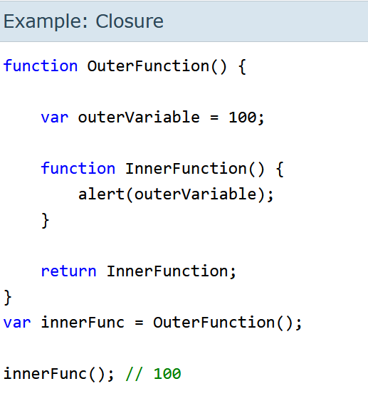
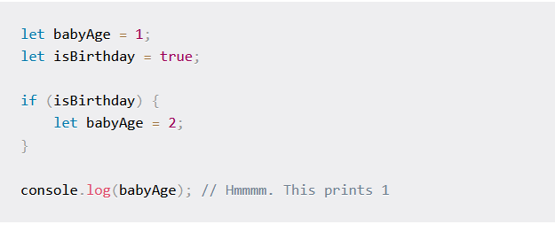

Day 2
Q1. What are the different types of variables in JS
There are 3 types of variables in JS,they are:
1. Var
2. let
3. const
Var:
Var is a global scope variable.
Var can reassigned.
Var can be redeclared.
Var can be modified later.
let:
let is a block scope.
let cannot be reassigned.
let cannot be redeclared.
let can be modified later.
const:
const is a block scope.
const cannot be reassigned.
canst cannot be redeclared.
const cannot be modified later.
Q2.What is hoisting is JS?
JavaScript hoisting occurs during the creation phase of the execution context that moves the variable and function declarations to the top of the script.
The JavaScript engine hoists the variables declared using the let keyword, but it doesn’t initialize them as the variables declared with the var keyword.
The JavaScript engine doesn’t hoist the function expressions and arrow functions.
Q3.What is a closure?
Closure means that an inner function always has access to the vars and parameters of its outer function, even after the outer function has returned.

In the above example, return InnerFunction; returns InnerFunction from OuterFunction when you call OuterFunction(). A variable innerFunc reference the InnerFunction() only, not the OuterFunction(). So now, when you call innerFunc(), it can still access outerVariable which is declared in OuterFunction(). This is called Closure.
Q4.What is temporal Dead-Zone?
This is what the TDZ is: the term to describe the state where variables are un-reachable. They are in scope, but they aren't declared.
The let and const variables exist in the TDZ from the start of their enclosing scope until they are declared.
You could also say that the variables exist in the TDZ from the place they get bound (when the variable gets bound to the scope it's inside) until it is declared (when a name is reserved in memory for that variable).

Note:but if we use var in the if condition then it will change the value as "var" declarations have no block scope.